DJI 大疆上云 API 2
无人机管理平台使用说明
基于 FlightHub PaaS SDK 构建的全功能无人机运营管理系统 —— 从设备接入、实时监控到航线规划、任务调度与三维重建，一站式的专业机队管理解决方案。
快速导航
平台概述
DJI 大疆上云 API 2 无人机管理平台是基于 FlightHub PaaS SDK 构建的全功能无人机运营管理系统，为 ISV（独立软件供应商）提供一站式专业机队管理能力。平台涵盖设备接入、实时监控、航线规划、任务调度、媒体管理、空域管控与三维重建等完整业务闭环。
◆核心能力一览
平台将碎片化的无人机运营能力整合为统一的管理视图，让运营人员无需关心底层 SDK 细节，即可完成从设备接入到数据成果的全流程操作。
运营数据总览，资产统计、任务分布与飞行数据可视化。
多路实时视频流监控，支持多种布局与多机同屏。
机场 / 飞行器列表、在线状态、固件与维保管理。
实时飞行监控、遥控操作、视频画面与飞行仪表。
航线库管理、可视化航线创建 / 编辑与贴近摄影规划。
飞行任务创建、执行、回放与状态跟踪。
照片 / 视频浏览、筛选与下载归档。
电子围栏、禁飞区、作业区可视化管理与同步。
三维重建任务管理与正射 / 三维模型浏览。
自然语言交互，智能设备查询与任务下发。
◆顶部导航栏
平台顶部为统一导航栏，集中展示所有功能模块入口，实现「一处进入、全站可达」的操作体验：
| 导航入口 | 定位 |
|---|---|
| 数据看板 ｜ 直播大屏 ｜ 设备管理 ｜ 驾驶舱 | 运营监控与设备控制核心入口 |
| 航线编辑器 ｜ 任务管理 | 飞行任务规划与调度 |
| 媒体管理 ｜ 空域管理 ｜ 模型库 | 数据成果与飞行空间管理 |
| 右上角：AI 助手 ｜ 用户菜单 | 智能交互与账号设置 / 退出 |
登录与账号管理
平台提供完善的注册、登录与基于角色（RBAC）的权限体系。系统中第一个注册的用户将自动成为管理员（admin），拥有用户管理权限。
◆2.1 登录
访问平台地址后进入登录页面。登录是进入平台所有功能的前提，安全会话通过 JWT 令牌维持。
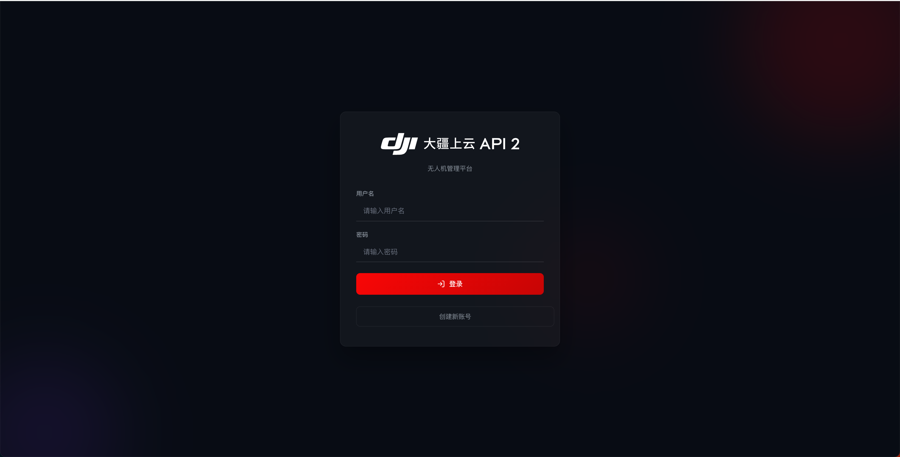
如尚未注册，点击登录表单下方的「创建新账号」即可进入注册页面。
◆2.2 注册账号
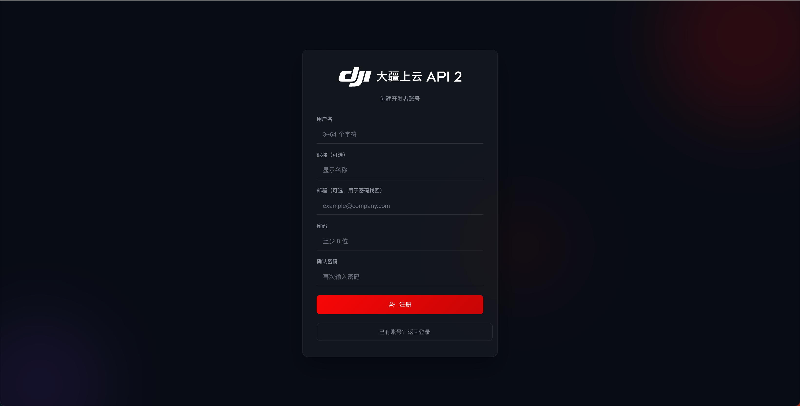
注册页面收集账号基础信息，字段说明如下：
| 字段 | 是否必填 | 说明 |
|---|---|---|
| 用户名 | 必填 | 3~64 个字符，用于登录。 |
| 昵称 | 可选 | 平台内展示的显示名称。 |
| 邮箱 | 可选 | 用于密码找回。 |
| 密码 | 必填 | 至少 8 位，建议使用大小写字母 + 数字组合。 |
| 确认密码 | 必填 | 需与密码保持一致。 |
◆2.3 用户管理入口
管理员登录后，点击右上角用户头像展开下拉菜单，选择「用户管理」进入管理页面。
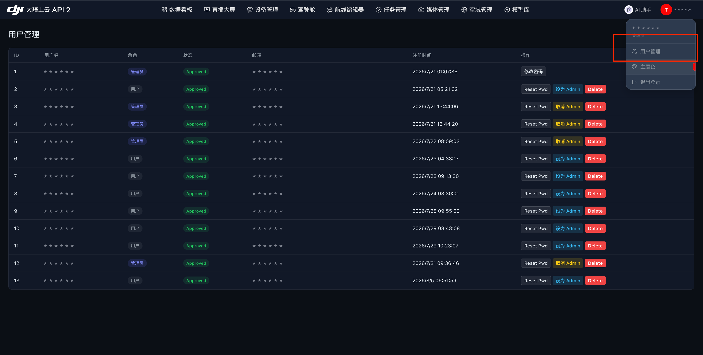
用户菜单选项：
- 用户管理 — 仅管理员可见，进入用户管理页面。
- 主题色切换 — 快速切换平台主题外观。
- 退出登录 — 结束当前会话，返回登录页。
◆2.4 用户管理页面
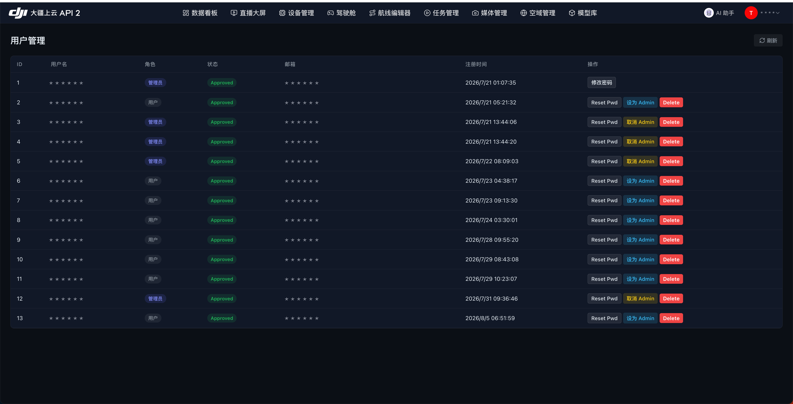
管理员可在此页面对平台所有用户进行集中管理，支持的角色与操作如下：
| 操作 | 说明 |
|---|---|
| Reset Pwd | 重置指定用户的密码。 |
| 设为 Admin | 将普通用户提升为管理员。 |
| 取消 Admin | 撤销管理员权限，降级为普通用户。 |
| Delete | 删除用户（操作不可恢复，请谨慎）。 |
| 修改密码 | 修改自己的密码（仅当前用户行可见）。 |
角色标识：
- 管理员 红色标签，拥有用户管理权限。
- 用户 灰色标签，普通用户权限。
数据看板
数据看板为系统首页，是运营人员进入平台后的第一屏，提供机队运营数据的全局概览，帮助快速掌握整体运行态势。
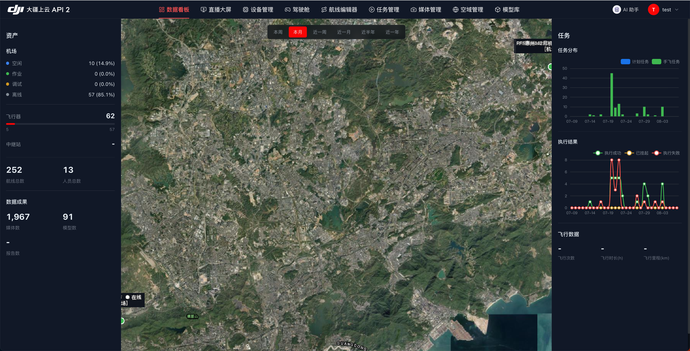
◆3.1 左侧 — 资产统计
资产统计面板以卡片形式展示平台核心资产的数量与状态分布：
| 数据项 | 说明 |
|---|---|
| 机场状态 | 空闲 / 作业 / 调试 / 离线的数量及占比。 |
| 飞行器 | 在线 / 离线飞行器数量。 |
| 中继站 | 中继站数量。 |
| 航线总数 | 已创建的航线条数。 |
| 人员总数 | 平台注册用户数。 |
| 数据成果 | 媒体数、模型数、报告数的汇总。 |
◆3.2 中央 — 地图视图
卫星影像地图展示所有设备（机场、飞行器）的地理分布位置。设备标记实时更新在线状态，运营人员可快速定位任意设备的地理位置，并直观判断其是否在线。
◆3.3 右侧 — 任务与飞行数据
- 任务分布 — 柱状图展示计划任务和手飞任务的时间分布。
- 执行结果 — 折线图展示任务执行 成功 / 挂起 / 失败 的趋势。
- 飞行数据 — 统计飞行次数、飞行时长、飞行里程。
◆3.4 时间筛选
支持按时间范围切换数据展示，满足不同的运营分析周期：
本周 近一周 近一月 近半年 近一年
直播大屏
直播大屏用于实时查看多台设备的视频流画面，适合指挥中心、多机协同等场景，支持多种画面布局与多机同屏监看。
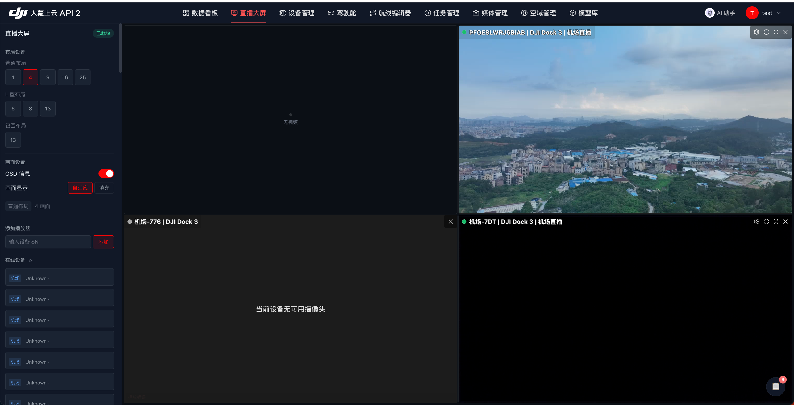
◆4.1 布局设置
根据监看设备数量与屏幕尺寸，可在画面区上方切换多种布局模式：
| 布局类型 | 可选数量 |
|---|---|
| 普通布局 | 1 / 4 / 9 / 16 / 25 |
| L 型布局 | 6 / 8 / 13 |
| 包围布局 | 13 |
◆4.2 画面设置
- OSD 信息 — 开关切换，在视频画面上叠加飞行参数（高度、速度、坐标等）。
- 画面显示 — 自适应 / 填充模式，适配不同的视频宽高比。
◆4.3 添加播放器
在左侧面板底部，可通过以下两种方式添加视频源：
◆4.4 视频画面操作
每个视频窗口提供独立的控制菜单，支持：
- 设置 — 画质 / 码流切换。
- 刷新 — 重新拉流，解决画面卡顿。
- 全屏 — 单窗口全屏查看。
- 关闭 — 移除当前播放器。
设备管理
设备管理页面集中展示平台下所有已接入的机场与飞行器信息，是设备接入后的统一管理入口，支持状态监控、固件管理与维保。
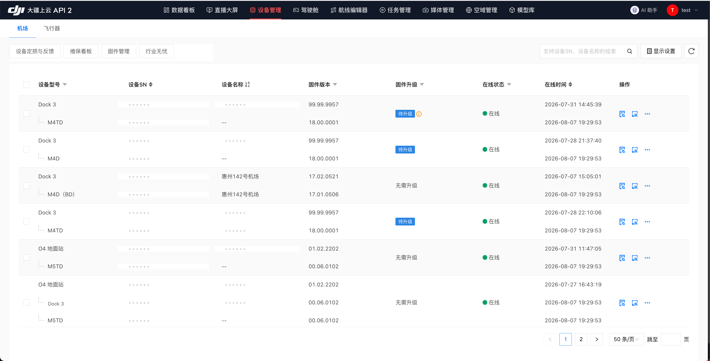
◆5.1 设备分类
页面顶部提供 Tab 切换，按设备类型分类浏览：
- 机场 — DJI Dock 3、O4 地面站等网关设备。
- 飞行器 — M4TD、M4D、M5TD 等无人机。
◆5.2 设备列表字段
| 字段 | 说明 |
|---|---|
| 设备型号 | Dock 3、O4 地面站等设备型号。 |
| 设备 SN | 设备唯一序列号。 |
| 设备名称 | 自定义名称或默认 SN。 |
| 固件版本 | 当前固件版本号。 |
| 固件升级 | 待升级 / 无需升级状态。 |
| 在线状态 | 绿色圆点 = 在线。 |
| 在线时间 | 最近一次上线时间。 |
| 操作 | 详情、驾驶舱入口等。 |
◆5.3 功能入口
页面上方提供设备运维相关快捷功能入口：
- 设备定损与反馈
- 维保看板
- 固件管理
- 行业无忧
◆5.4 搜索与显示
- 支持按设备 SN 或设备名称搜索。
- 「显示设置」可自定义列表显示字段。
- 分页浏览，默认 50 条 / 页。
驾驶舱
驾驶舱是平台核心功能页面，提供完整的实时飞行监控与操控能力，包括地图轨迹、辅助影像、实时画面与飞行仪表，是执行飞行任务时的「主控台」。
◆6.1 选择设备
进入驾驶舱前需先选择一台在线机场设备，驾驶舱将围绕该设备及其关联飞行器展开监控。
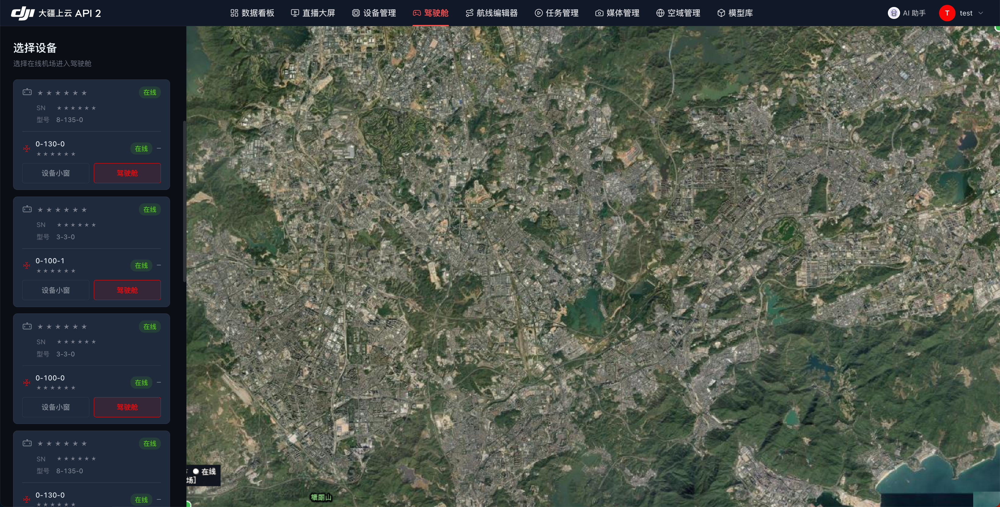
- 左侧列出所有在线机场及其关联飞行器。
- 显示设备 SN、型号、在线状态。
- 点击「驾驶舱」按钮进入该设备的实时控制界面。
- 点击「设备小窗」可快速查看设备监控画面。
◆6.2 飞行监控
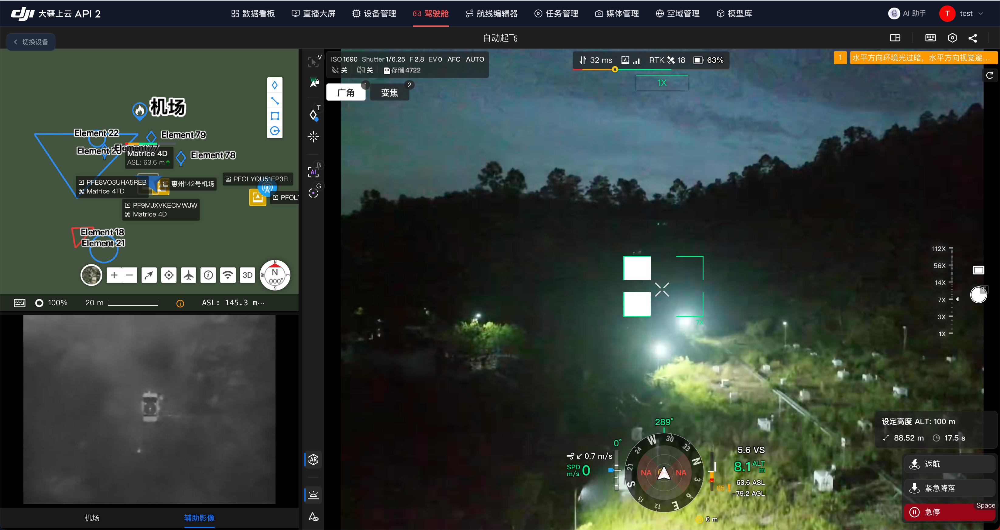
驾驶舱页面采用多区域布局，各区域职责如下：
左上 — 地图视图
- 卫星地图展示设备位置和飞行轨迹。
- 支持 2D / 3D 视角切换。
- 显示机场、飞行器、航点等标记。
左下 — 辅助影像
- 机场摄像头画面（红外 / 可见光）。
右侧 — 主画面
- 飞行器实时视频画面。
- 广角 / 变焦镜头切换。
- 相机参数显示（ISO、快门、光圈等）。
底部 — 飞行仪表
- 罗盘与航向指示。
- 速度（SPD）、高度（ALT / ASL / AGL）。
- 飞行距离、飞行时间。
- RTK 信号状态、电池电量。
右下 — 操控按钮
- 返航 — 一键返回起飞点 / 机场。
- 紧急降落 — 触发紧急降落流程。
- 急停 Space — 紧急停止电机。
航线编辑器
航线编辑器提供从航线库管理到3D 可视化航线规划的完整能力，支持贴近摄影、面状、航点等多种航线类型，是精细化作业的核心工具。
◆7.1 航线库
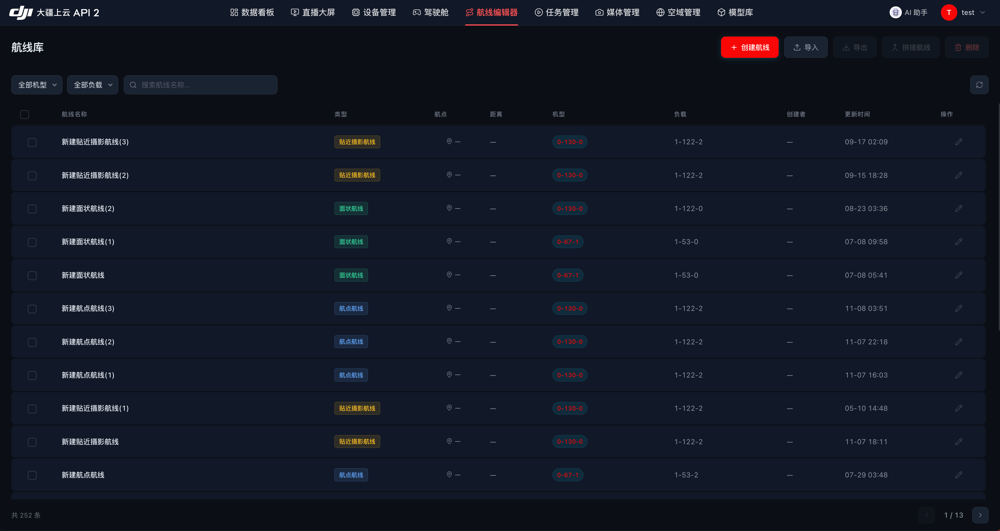
航线库页面管理所有已创建的航线文件，列表主要字段如下：
| 字段 | 说明 |
|---|---|
| 航线名称、类型、航点数、距离、机型、负载、更新时间 | |
航线类型（彩色标签）：
- 贴近摄影航线 精细化倾斜摄影建模。
- 面状航线 区域覆盖式测绘。
- 航点航线 逐点巡航巡检。
操作按钮：
- + 创建航线 — 新建航线。
- 导入 — 导入 KMZ 航线文件。
- 导出 — 导出选中航线。
- 拼接航线 — 合并多条航线。
- 删除 — 批量删除。
同时支持按机型、负载筛选，按名称搜索。
◆7.2 创建新航线
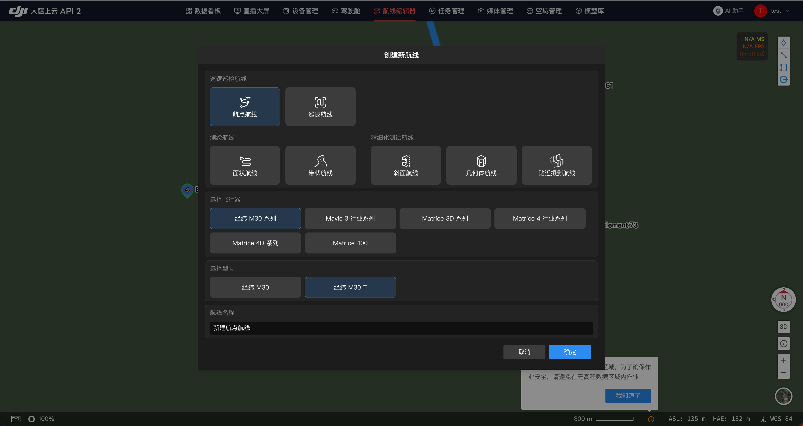
点击「+ 创建航线」后弹出配置对话框，按步骤完成：
第 1 步 — 选择航线类型
| 分类 | 航线类型 |
|---|---|
| 巡逻巡检航线 | 航点航线、巡逻航线 |
| 测绘航线 | 面状航线、带状航线 |
| 精细化测绘航线 | 斜面航线、几何体航线、贴近摄影航线 |
第 2 步 — 选择飞行器
- 经纬 M30 系列
- Mavic 3 行业系列
- Matrice 3D 系列
- Matrice 4 行业系列
- Matrice 4D 系列
- Matrice 400
第 3 步 — 选择型号
例如：经纬 M30 / 经纬 M30 T。
第 4 步 — 输入航线名称
输入航线名称后点击「确定」进入编辑器。
◆7.3 航线编辑

进入航线编辑器后，可在 3D 地图上进行航线规划：
- 左侧参数面板 — 选择镜头（广角 / 红外）、GSD 分辨率设置（cm / pixel）、相对被摄面距离、安全起飞高度、测区顶部 / 底部高度（ASL）。
- 地图区域 — 在地图上绘制航线区域，蓝色线条显示规划航线路径，航点标记。
- 右上 — 测区绘制工具。
◆7.4 贴近摄影流程
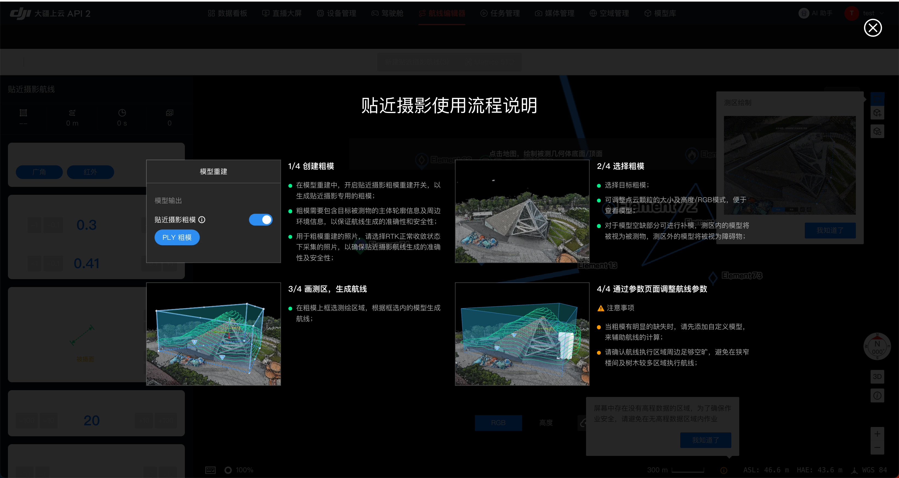
贴近摄影航线遵循 4 步流程：
- 创建粗模 — 开启贴近摄影粗模重建开关，生成粗模。
- 选择粗模 — 选择目标粗模，调整点云粒度查看。
- 画测区，生成航线 — 在粗模上框选测绘区域。
- 通过参数页面调整航线参数。
任务管理
任务管理页面展示所有飞行任务及其执行状态，支持任务的创建、执行、暂停 / 取消与轨迹回放，是飞行调度的核心入口。
◆8.1 任务列表
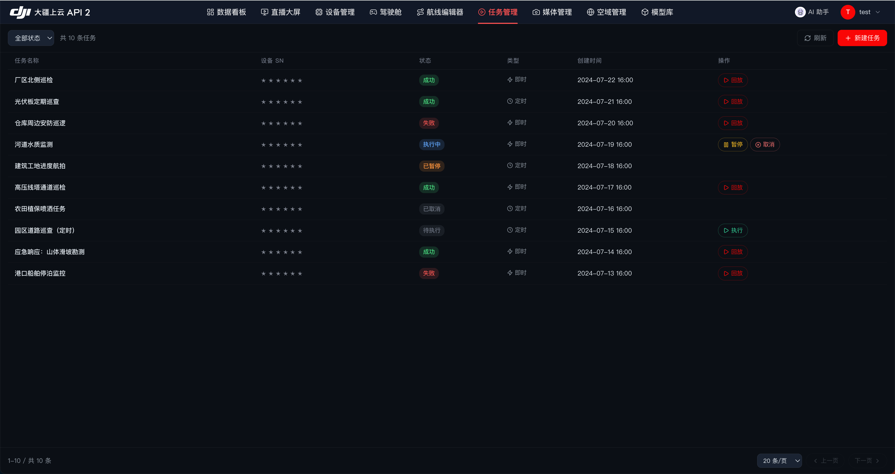
| 字段 | 说明 |
|---|---|
| 任务名称 | 自定义任务名称。 |
| 设备 SN | 执行任务的设备序列号。 |
| 状态 | 成功 失败 执行中 已暂停 待执行 已取消 |
| 类型 | 即时 / 定时。 |
| 创建时间 | 任务创建时间。 |
| 操作 | 回放 / 暂停 / 取消 / 执行。 |
状态与操作对应：
- 成功 / 失败 → 回放
- 执行中 → 暂停 / 取消
- 待执行 → 执行
支持按状态筛选，点击「+ 新建任务」创建任务。
◆8.2 新建任务
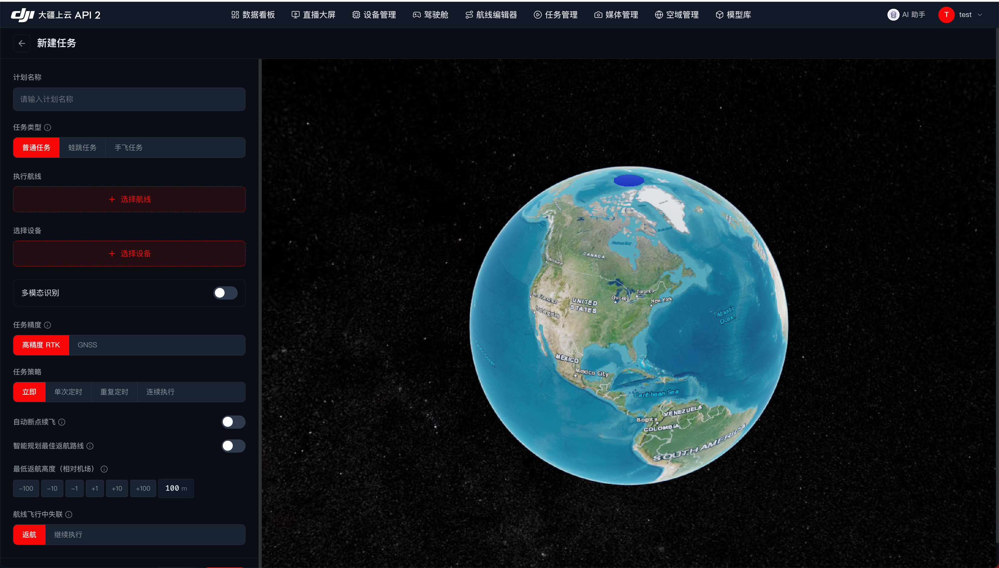
新建任务可配置以下参数：
| 配置 | 选项 / 说明 |
|---|---|
| 计划名称 | 自定义输入。 |
| 任务类型 | 普通任务 / 蛙跳任务 / 手飞任务。 |
| 执行航线 | 从航线库选择。 |
| 选择设备 | 从在线设备选择。 |
| 多模态识别 | 开 / 关。 |
| 任务精度 | 高精度 RTK / GNSS。 |
| 任务策略 | 立即 / 单次定时 / 重复定时 / 连续执行。 |
| 自动断点续飞 | 开 / 关。 |
| 智能规划最佳返航路线 | 开 / 关。 |
| 最低返航高度 | 相对机场，默认 100m。 |
| 航线飞行中失联 | 返航 / 继续执行。 |
◆8.3 任务回放
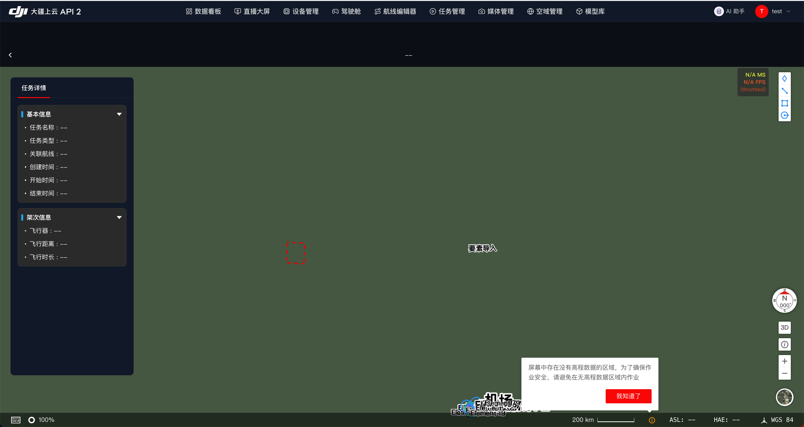
任务执行完成后可查看回放：
- 左侧 — 任务详情：基本信息（任务名称、类型、关联航线、创建 / 开始 / 结束时间）、架次信息（飞行器、飞行距离、飞行时长）。
- 地图区域：在 3D 地图上回放飞行轨迹，标注航点位置。
媒体管理
媒体管理页面用于浏览和管理无人机拍摄的照片与视频文件，支持按类型、设备与时间范围筛选，并提供下载与删除能力。
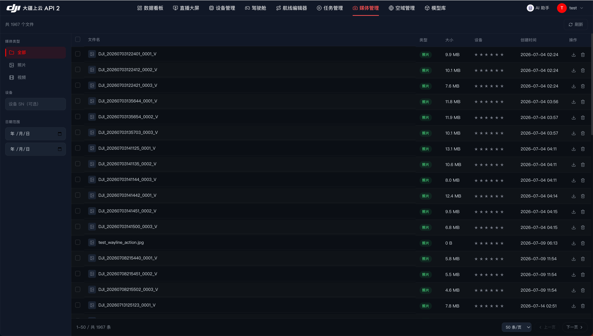
◆9.1 筛选条件
左侧筛选面板：
- 媒体类型 — 全部 / 照片 / 视频。
- 设备 — 输入设备 SN 筛选。
- 日期范围 — 设置起止日期。
◆9.2 文件列表
| 字段 | 说明 |
|---|---|
| 文件名 | DJI 标准命名格式（如 DJI_20260703122401_0001_V）。 |
| 类型 | 照片 / 视频。 |
| 大小 | 文件大小。 |
| 设备 | 拍摄设备 SN。 |
| 创建时间 | 拍摄时间。 |
| 操作 | 下载 / 删除。 |
◆9.3 分页
- 默认每页 50 条。
- 显示总文件数（如「共 1967 个文件」）。
- 支持翻页浏览。
空域管理
空域管理在 Cesium 3D 地图上可视化展示和管理飞行区域限制，通过电子围栏、禁飞区与作业区，为飞行作业划定清晰的安全边界。
◆10.1 空域列表
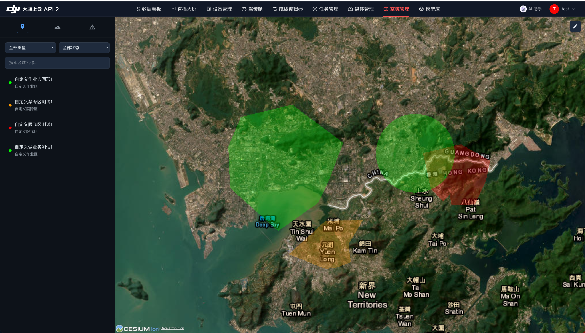
- 左侧面板：类型筛选 / 状态筛选、区域名称搜索、已创建的区域列表（带颜色指示）。
- 地图视图：绿色区域 = 作业区（允许飞行）、红色区域 = 限飞区（禁止飞行）、橙色区域 = 禁降区（禁止降落）。
◆10.2 创建空域
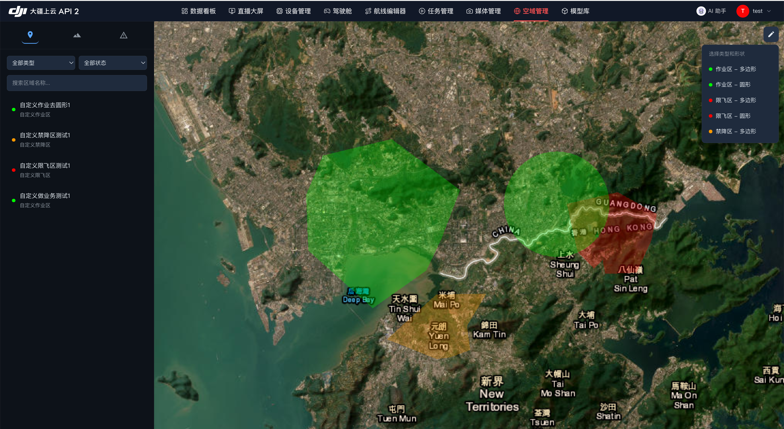
点击右上角编辑按钮后，可选择创建的区域类型和形状：
| 区域类型 | 形状选项 | 颜色标识 |
|---|---|---|
| 作业区 | 多边形 / 圆形 | 绿色 |
| 限飞区 | 多边形 / 圆形 | 红色 |
| 禁降区 | 多边形 | 橙色 |
操作步骤：
模型库
模型库管理三维重建的成果文件，支持正射影像、三维 Mesh 与点云模型，并提供重建任务的全流程管理。
◆11.1 模型列表
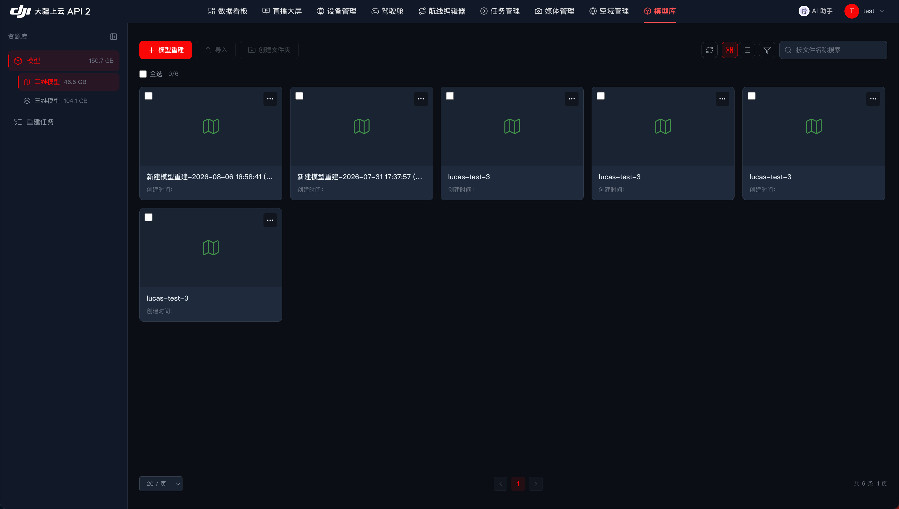
- 左侧导航：资源库（模型、二维模型、三维模型）、重建任务。
- 模型卡片：网格视图 / 列表视图切换、显示模型名称和创建时间、支持导入、创建文件夹、按名称搜索、筛选。
◆11.2 新建模型重建
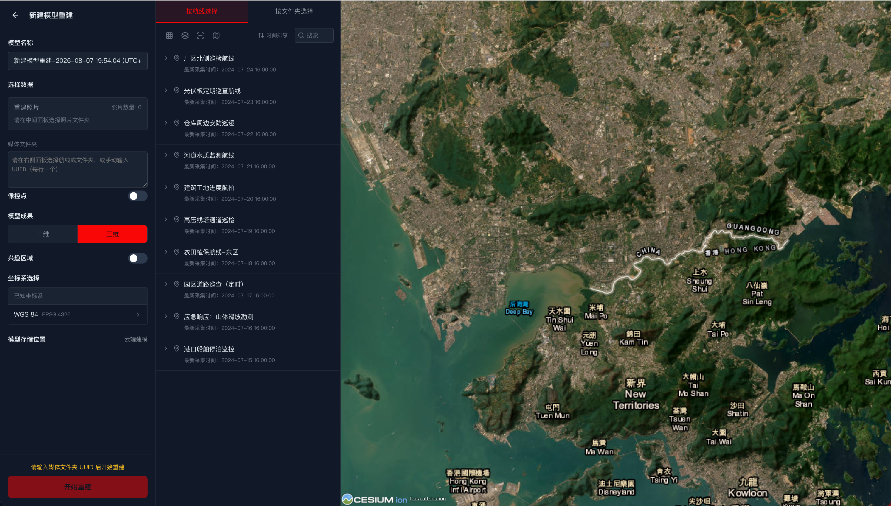
配置步骤：
配置完成后点击「开始重建」提交任务。
AI 助手（Copilot）
平台内置 AI 助手（Copilot），通过自然语言交互提供智能运维能力，让复杂的设备查询、任务下发与数据汇总变得简单直接。
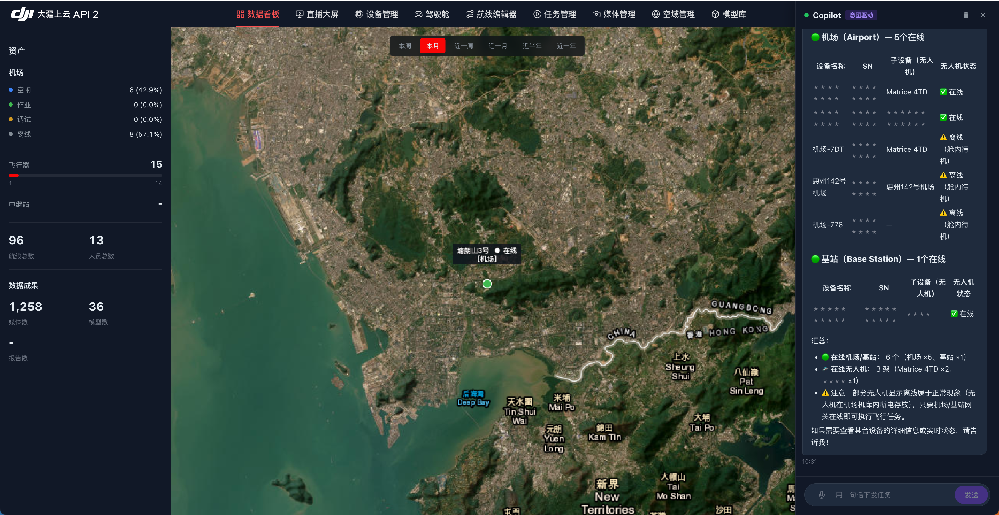
◆12.1 入口
点击顶部导航栏右侧「AI 助手」按钮，打开右侧 Copilot 面板。
◆12.2 功能特性
自然语言描述需求，AI 自动执行操作。
询问设备在线状态、型号信息。
通过对话创建和管理飞行任务。
自动聚合设备、航线、任务等运营数据。
根据设备状态给出注意事项和建议。
◆12.3 使用示例
在对话框中输入自然语言指令即可，例如：
- 「查看当前在线设备」
- 「帮我查看惠州 142 号机场的状态」
- 「创建一个巡检任务」
AI 助手会以结构化表格返回结果，并提供操作建议。
◆12.4 启用条件
AI 助手需要后端配置以下环境变量：
FH_CHAT_ENABLED=true— 启用 Chat 功能。SPRING_AI_OPENAI_API_KEY（或 Anthropic Key）— AI 模型密钥。FH_CHAT_MCP_URL— MCP Server 地址。